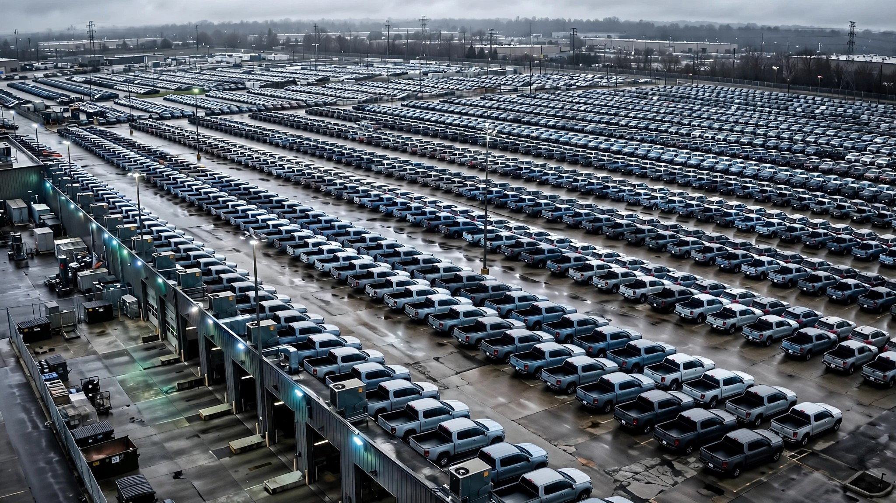

Ford Has Recalled 11.2 Million Vehicles This Year. Now It's Recalling the Recalls.

Ford Motor Company has recalled 11,234,087 vehicles in 2026 so far, according to iSeeCars analysis of NHTSA data through June 18. That is more than Honda, Hyundai, Toyota, and Nissan put together. It is more than half of every vehicle recalled in the United States this year, across all manufacturers. And last week, Ford managed to top itself: four of its five newest recall campaigns were for vehicles it had already recalled and supposedly fixed.
Read that again: four out of five, and not for new defects or previously unknown problems surfacing under warranty. These were vehicles that already went to a Ford dealership, sat in a service bay, received a recall repair, and went back to their owners still broken. NHTSA filed four re-recall campaigns between June 15 and 17: 5,252 Focus and Fusion models with transmission clutches that can fracture and leak fluid (fire risk), 10,742 F-150s whose shifters can slam into Reverse or Neutral without warning, 18,124 Escapes with power windows that crush instead of auto-reversing, and 91,198 more F-150s with headlights that violate federal standards.[1] All four carried the same NHTSA notation: "previously repaired incorrectly."
The total from that single week of re-recalls: roughly 125,000 vehicles. Every one of them had already gone through the recall process once. Every one left the dealership with the original problem intact or a new one introduced by the "fix."
For context, here is what Ford's recall volume looks like against the rest of the industry in 2026, per iSeeCars:[2]
| Manufacturer | Vehicles Recalled YTD | YoY Change |
|---|---|---|
| Ford | 11,234,087 | +166% |
| Honda | 2,615,008 | +259% |
| Hyundai | 1,679,983 | +3,487% |
| Toyota | 1,320,333 | +51% |
| Everyone else combined | 5,545,683 | — |
Ford sold about 2 million vehicles in 2025. It has recalled 5.6 times that number in 2026 alone, because recalls cover multiple model years. Seven separate campaigns landed in the first 16 days of June. Two carried explicit "Do Not Drive" warnings: Bronco Sport and Maverick ball joints that could separate, and Bronco, Explorer, and Ranger engine components that could cause sudden power loss.[3] The 2024 Explorer got its own campaign for a buffer overflow in the powertrain control module that causes the transmission to slam into park while moving, then fail to re-engage, leaving the vehicle free to roll.[1]
This matters beyond Ford's quality control department because these are high-body-count vehicles. In FARS data from 2014 to 2023, the F-150 appears in 9,194 fatal crashes, roughly 919 per year, followed by the Focus at 3,046, the Escape at 2,284, the Fusion at 2,168, and the Expedition at 1,515. Combined, models being re-recalled last week represent vehicles involved in more than 18,000 fatal crashes over the past decade.[4] When recalls on these vehicles fail, the stakes are not theoretical.
Limitations
FARS counts fatal crashes by vehicle involved, not by defect cause. We cannot isolate how many of those 18,000+ fatalities trace to the specific defects being re-recalled. iSeeCars recall population counts include duplicate VINs when a single vehicle is subject to multiple campaigns, so the 11.2 million figure overstates the number of unique affected vehicles. And NHTSA's recall completion data, which averages around 59% industrywide and drops to 15% for vehicles over 10 years old, does not track re-recall completion separately.[5] We do not know how many owners who went through one botched repair will come back for the second attempt.
The strongest case for Ford
More recalls can mean more transparency, not more defects. Ford may simply be more aggressive about filing with NHTSA than competitors who quietly issue Technical Service Bulletins to fix the same problems without the paperwork. Re-recalls themselves demonstrate that Ford catches its own mistakes and circles back, which is arguably better than pretending the first fix worked. Tesla's recall volume dropped 65% year-over-year, but that manufacturer's entire recall strategy is over-the-air software updates, a fundamentally different compliance model that obscures direct comparison.
What you should do
If you own a Ford, run your VIN at nhtsa.gov/recalls today. If you had a recall repair done in the past two years, run it again. Your vehicle may be in the re-recall population, and your dealership will not call you until notification letters go out in early July. If you own a 2021-2026 Bronco Sport, a 2022-2026 Maverick, or a 2025-2026 Bronco, Explorer, or Ranger with a "Do Not Drive" notice, stop driving it until the repair is complete. Seriously. "Do Not Drive" means do not drive.
Sources & References
- Carscoops, “Ford Botched Repairs On Over 125,000 Vehicles, Leading To Four New Recalls,” June 17, 2026. carscoops.com
- iSeeCars, Car Recalls Dashboard, NHTSA data as of June 18, 2026. iseecars.com
- How-To Geek, “Check your VIN: Ford, Honda, Toyota, and others issue major June recalls,” June 16, 2026. howtogeek.com
- NHTSA, Fatality Analysis Reporting System (FARS), 2014–2023. nhtsa.gov
- NHTSA, Report to Congress: Vehicle Safety Recall Completion Rates. nhtsa.gov